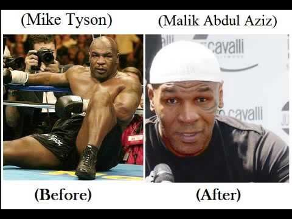
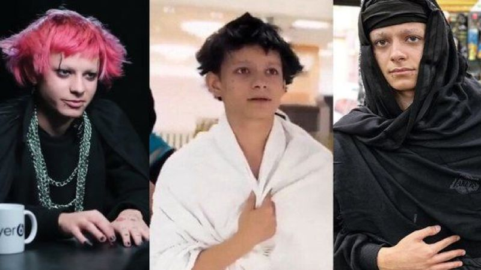

example of people that islam changed their life completely
firstly we have mich tyson before becoming muslim mike was an agressive teenager he used to have problem with other people without any reason but one day he gt into a trouble and he goind to jail and in the prison he meet a muslim person next he find piece and he become a good person and he didn get into problem

second one we have eva webayna he was devil worshipper but then he realsied that he is in the rong way he used to be a popular in soial media as the guy with weird hair style but fter he surprised the hole world The young man, Eva, surprised his followers on social media when he posted a video of himself removing the piercings from his face and changing his features, then he appears performing the Umrah rituals in the Grand Mosque in Mecca.

now we have sheikh othman for me sheikh heikh Abu Yusuf Uthman bin Farooq al-Yusufzai he zqs born in pakista but in the age of 5-7 othman amillywent to united state san diego california ohmqn fqmilly think that ameica is a heaven but thethink ta theydont know that the place called hell in earth in hightschool othman join a gang e used to figh with teennaagers he use knife gun he steal he do every bad thing Then after that, they prepared a plot to kill him and his friend. They had arranged a date with a girl, and during that date, God kept Sheikh Othman safe and he did not die. When he heard about his friend’s death, he was surprised and realized that this was supposed to happen. He realized that life is fleeting and that what you own will be taken away from you.
He thought about his life and being a Muslim and left the gang and they left him because he was a Muslim. If he had not been a Muslim, they would have killed him. Now look at Sheikh Othman. He made an entire gang enter Islam and a lot of achievement

now am gonna presnt you an example about christian people who accept islam